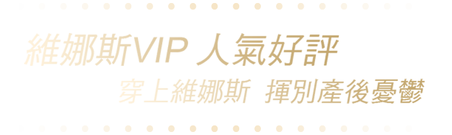
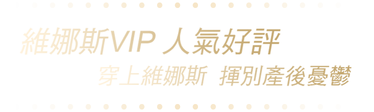

維娜斯塑身衣使用回彈力極佳的推指彈性布，讓我不論是在家照顧嬰兒還是出門與大小孩追逐玩耍，都可以一邊享受20隻手同時幫忙推推指，在每次穿著的同時都默默地將肚子和背部的肉肉送回該去的地方，專利363的特殊魔軌縫線，與後面特殊的立體臀杯設計，更為我產後的身材曲線，提供了一次重生的機會!
穿了維娜斯塑身衣後，我想以後就算回復懷孕前的樣子了，我也會想再持續穿，好來維持美美的身型體態。其實真的覺得不只產婦需要穿塑身衣來回復體態，愛美的女生都可以穿來維持和矯正身形喔！
穿上維娜斯3個月後，腰圍小了4吋腹圍小了6吋，我朋友每一次看到我都尖叫說我怎麼比上次更瘦了，我告訴他們維娜斯塑身衣真的很值得擁有，特別是朵朵的服務尤其令人滿意，不但會隨時注意我穿塑身衣的情形、也會跟我分享許多的塑身資訊，就因為有她讓我更愛維娜斯。
穿維娜斯塑身衣的好處除了雕塑身材之外，還能代替束腹將剖腹產傷口固定住，而且又比束腹還來的舒服。穿維娜斯塑身衣還能調整懷孕後變形的副乳、多出來的背肉、和下垂的屁股⋯等等。產後5個月，我已經要修改第三次了，看著我日漸恢復的身材，真的很感動！
我是個對自己身材非常嚴格的女生，生產後除非身體不舒服，不然基本上天天運動和上健身房。 第一次穿上塑身衣時，走路會抬頭挺胸體態變得很漂亮，且原本凸出來的肚子都收進去了，一點也不像剛生完孩子的產婦！親餵也很方便，帶往下拉即可隨時哺乳寶寶，上廁所也很方便不用脫下來，出門也很好穿搭，感謝維娜斯讓我變得更美了。
 
